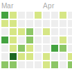
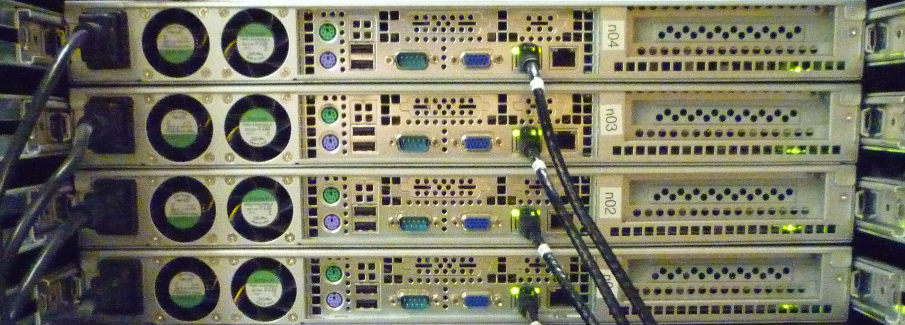

Hanquan Liang

|
Hanquan Liang
Integrated Genomics Facility (IGF)
Department of Plant Pathology
4024 Throckmorton Plant Sciences Center
Kansas State University
Manhattan, KS 66506
email: hliang AT ksu.edu
Office: (785) 532-2569
Lab: (785) 532-1356
Bog: http://hlsnotes.blogspot.com
GitHub: https://github.com/hliang
|
I am working in the Integrated Genomics Facility, Department of Plant Pathology. We apply Microarray and Next-Generation Sequencing (NGS) technologies to the genomics research of various species.
My job is to generate, process and, most importantly, analyze genome-scale data sets.
With strong interest in computer science, I enjoy coding to solve interesting problems, and getting involved in open source project development.
I'm also responsible for administration of clusters and computers, which proactively ensures system availability and performance.
Teaching Experiences
- PLPTH 785: Real-Time PCR Workshop
- Summer 2010, Summer 2011, Summer 2012, Summer 2013
- PLPTH 780: Gene Expression Analysis (RNA-seq) Workshop
- Summer 2013
- PLPTH 780: Microarray Workshop (Deprecated)
- Summer 2010, Summer 2011, Summer 2012
Bioinformatics:
Use bioinfomatic tools to analyze and interpret genomics data.

Programming:
Python, Perl, Java, Matlab/Octave, etc. Used them in various projects.

System Admin:
Administrator of clusters and servers used in our lab.

Molecular Biology:
Gene cloning, mutation and knock-out, protein expression, immunoblot assay etc.

Projects
- System Admin
- Organized Linux servers, installed, evaluated, and optimized performance of scientific software.
Deployed bioinformatics infrastructure (Galaxy), trained researchers to access HPC resources and utilize bioinformatics tools.
Scheduled routine tasks to be automatically run in the background at regular intervals. (cron)
- Software Engineering
- Proposed and implemented a software to scan and solve sudoku puzzles on printed materials. (Java)
Image capture and processing.
Extract text from images using OCR APIs.
Sudoku puzzle solving.
- Data Mining
- Accessed Twitter API and collect live stream tweets. (Python, JSON)
Estimated the public's perception (the sentiment) of a particular term or phrase. (Python)
Analyzed the relationship between location and mood based on geographic information and sentiment score. (Python)
- Machine Learning
- Implemented regularized linear regression to predict housing prices. (Octave/MATLAB)
Builded a logistic regression model to predict whether a student gets admitted into a university.
Implemented an anomaly detection algorithm to detect anomalous behavior in server computers.
Used collaborative filtering to build a recommender system for movies.
- Bioinformatics
- Developed processing, analysis, and visualization applications for sequence assembly, gene annotation of wheat chromosome. (Perl, R)
Conducted and implemented statistical models for comparative gene expression analysis of plant-pathogen system. (Python, R)
- Others
- Designed and implemented own homepage. (HTML , CSS)
Builded function that performs convolution, constructed and applied a variety of filters to images. Create video textures, find largest loop in video. (PYTHON, OpenCV, NumPy)